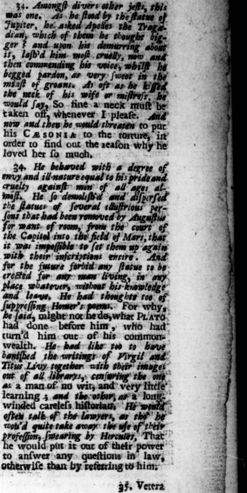
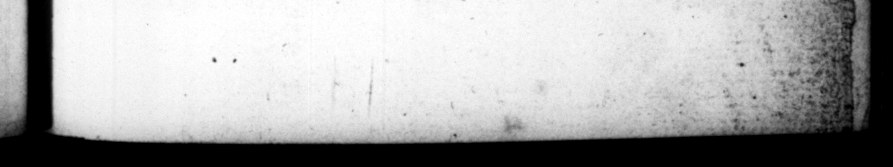

- * » 2 - y % * * 8 y 0 „ 2 | - < 9 85 a oe he $7580 = . 2 c. CESAR CALIGUL A” 189 tim poſſe : #. and the conſuls who' were next Mi very cl viliy ＋ bim” the occaſion, Nothing, he, but cha mo upon a langle of mine you may both vou have your ©= chroats cut. | , Inter varios jocos, cum Amongſt di vers aſl lens ſimulacro Jovis, Apel- | . be lem tragædum conſuluiſſet, uter, illi major videxetur, cu tem Alagellis diſcidit 3 col laudans ſubinde vocem deprecantis, quaſi etiam in gemitu prædulcem. Quories uxoris vel amiculz, collum ex oſcularetur, addebat, Tam demetur. in & fſ{ubinde Haus 28 vel cults dt onta car ili order to find out the eam tantopere diligeret. ie 34. Nec minore livore ad 34 He behaved with s degree malignitate quam ſuperbia envy and il nature equal to his pride ſzviciaque pœne adverius om» cruelty againſt mor all age; at-nis ævi ines Sraſſatus weſt, He Gene and' Shoſet elt. Statuas virurum illuſ- 5 Rorues of ſeveral 1huffrious pertrium, ad Auguſto ex Capito- ſons that had — doen „ lina area propter anguſtias for want of room, from of in Martium campum ellatas, be Cop ita ſubvertit atque disjecit, it ,ws 2 ut reſtitui ſalvis titulis non ü valuerint. Vetuitque poſtviventium cuiquam uſquam ſtatuam aut imaginem, plac niſi conſulto ſe & auctore, (fn. Cogitavit etiam de eri carminibus abolendis. Cur enim eb Non ficere, dioens, qued _ Plztomi licuit, eum e cryigate uam conUuehat" ejecerit 8 Sed & 2 2 _ — 3 | Imagines, paullum ab fut quin ex dende biblio. ts amoverit : quorum al , be would threayes to his C a 50n14 tothe — in nad reſpondere taſſent ra: ter eum,

